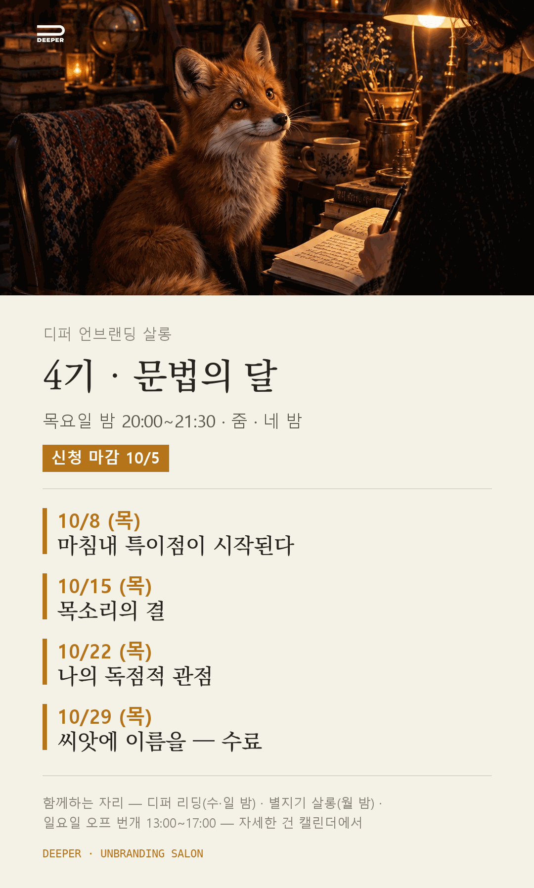

4기 · 문법의 달
내 이름으로 된 자산 한 뼘을 짓는 첫 달
2026. 10. 8 — 10. 29 · THU 20:00
내 것이 있어야 한다는 것
얼마 전 G20 자리에서 젠슨 황이 한 대담을 봤어요. 그가 가장 오래 말한 건 기술이 아니라 사람 쪽이었어요. AI 시대에 각자가 힘을 쏟아야 할 곳은 자기만의 자산을 쌓는 일이라는 것. 남이 만든 도구를 잘 쓰는 것으로는 부족하고, 그 도구가 읽을 내 것이 있어야 한다는 것.
디퍼는 그 「내 것」을 세컨브레인이라 불러요.
세컨브레인은 메모 앱이 아니에요. 내가 오래 해 온 일에서 나만 아는 판단 기준, 손으로 쓴 아침의 문장, 반복해서 나에게 돌아오는 업무의 순서. 그것들을 내 컴퓨터 안에 내 언어로 쌓은 방이에요. 그 방을 읽는 AI가 사막여우예요. 범용 AI는 내 현장을 몰라요. 내 현장을 아는 AI만 나를 밀어올려요.
4기 문법의 달은 그 방의 첫 삽이에요. 한 달 동안 손으로 쓰고, 여우에게 먹이고, 나만 볼 수 있는 각도를 찾아요. 마지막 밤, 씨앗에 이름을 붙여요. 그때 남는 것은 강의 노트가 아니라, 내 이름으로 된 자산 한 뼘이에요.
원천에서 씨앗까지
이번 모집은 나를 탐구하고 나의 언어와 판단 기준을 정리하는 '문법' 과정입니다. 4기는 목요일 밤, 온라인으로 함께 걷습니다.
한 달 뒤 여우가 읽는 글은 그동안 나에게서만 나온 문장입니다.
같은 도구를 써도 재료가 다르면 돌아오는 답이 달라집니다.
어떻게 걷나요
오래 해온 일에는 나만 아는 경험과 판단 기준이 쌓여 있습니다. 디퍼 언브랜딩 살롱에서는 내가 어떤 사람이고, 어떤 방식으로 일하고 싶은지부터 살펴봅니다.
10 / 08 (THU) · WEEK 01
마침내 특이점이 시작된다
여우와 인사하고, 그 자리에서 첫 삽을 뜹니다. 소개와 첫 걸음이 한 밤에 있습니다.
- 그 밤에 손에 남는 것
- 내 컴퓨터 안에 자리 잡은 사막여우, 그리고 첫 「안녕」 — 왜 손으로 쓰는지, 내 도메인이 어디쯤인지도 한 번 짚어 봅니다.
- 함께 하는 것
- Claude Code 설치와 사막여우 세팅. 코딩이 처음이어도 괜찮습니다. 가입과 설치는 함께 진행합니다.
- 그 주의 실습
- 아침 손글씨와 냠냠 · 매일 안녕 · 일요일 밤하늘. 이번 주 할 일은 셋뿐입니다.
10 / 15 (THU) · WEEK 02
목소리의 결
첫 주에 캔 것이 어디서 왔는지 봅니다. 가장 깊은 목소리는 가장 아픈 경험에서 옵니다.
- 그 밤에 손에 남는 것
- 손으로 쓴 세 줄과 씨앗 문장 초고 한 줄 — 힘들었던 시간, 거기서 알게 된 것, 돕고 싶은 사람.
- 함께 하는 것
- 목소리의 결은 기교가 아니라 살아온 방식의 흔적이라는 것. 그리고 나의 특이점 지도를 그려 봅니다.
- 그 주의 실습
- 언어 지문 하나. 밖에 써둔 글 서너 편을 냠냠으로 들이고 프롬프트 한 번. 새로 더하는 것은 이것 하나입니다.
10 / 22 (THU) · WEEK 03
나의 독점적 관점
두 주 동안 캔 것 가운데 소화되지 않는 것을 가려냅니다. 씨앗 문장을 뿌리로, 콘텐츠 나무의 첫 가지를 그립니다.
- 그 밤에 손에 남는 것
- 살아낸 것 목록 서너 줄과 첫 문장 한 줄 — 거칠어도 오늘의 버전. 500자까지 불편한 채로 늘려 와도 됩니다.
- 함께 하는 것
- 오토파지 — 낡은 것을 먹어 새것을 짓는 순환. 다시 원점에 선 것 같은 감각이 소화가 진행 중이라는 신호라는 것.
- 그 주의 실습
- 지식 지형도 한 번. 오늘 손으로 쓴 것을 냠냠으로 들이면, 여우가 두 주치를 읽고 무엇이 깊고 무엇이 아직 땅속인지 그려 줍니다.
10 / 29 (THU) · WEEK 04 · 수료
씨앗에 이름을
세 밤 동안 캔 것을 이름 하나로 묶고, 그 이름을 독자의 언어로 건넵니다. 이 밤이 문법 수료입니다.
- 그 밤에 손에 남는 것
- 개념어 하나, 은유 하나, 한 문장 — 누구를 위해 · 무엇을 · 어떻게. 그리고 30초 피치를 한 번은 입으로 말해 봅니다.
- 함께 하는 것
- 아우라의 이동, 오병이어, 이름이 붙는 순간 잡을 수 있게 된다는 것. 그리고 내 말을 독자의 말로 옮기는 자리.
- 그 주의 실습
- 이름과 한 문장 · 30초 피치 · 첫 글 500자. 서른세 걸음을 다 걸으면 그 기록에서 『내 목소리』(내 문체 정의서)와 『나의 사막』(한 달의 실측 한 장)이 지어집니다.
내 컴퓨터에 사는 세컨브레인
사막여우가 한 달 동안 하는 일은 셋입니다. 아침에 손으로 쓴 문장을 사진으로 찍어 먹이고, 하루 하나의 샘 앞에서 한 질문에 답하고, 서른세 걸음을 하루 한 걸음씩 걷습니다.
사막여우와 함께 내 기록을 읽고 질문을 주고받으며, 내가 중요하게 여기는 것을 말과 글로 정리합니다. 이 기록이 쌓이면 AI가 읽을 '내 것'이 생깁니다. 반복되는 업무 하나를 여우에게 건네는 일은 그다음 달입니다.
이런 분들과 함께하고 싶어요
- 자기 경험을 나만의 언어와 자산으로 남기고 싶은 분
- 내가 직접 챙겨야만 돌아가는 업무를 줄이고 싶은 분
- 나의 경험과 판단 기준을 AI가 참고할 수 있도록 정리하고 싶은 분
- AI 도구 설치와 코딩이 낯설어서 시작부터 같이 걸을 사람이 필요한 분
함께 실습할 내용
- ①Claude Code 설치와 사막여우(내 컴퓨터에 사는 세컨브레인) 세팅
- ②아침 손글씨 세 줄 — 여우에게 먹이고 내 언어 지문 찾기
- ③살아낸 것 목록과 지식 지형도 — 내 도메인이 어디인지
- ④씨앗에 이름 붙이기 — 개념어 하나, 은유 하나, 한 문장
- 서른세 걸음을 다 걸으면 그 기록에서 『내 목소리』(내 문체 정의서)와 『나의 사막』(한 달의 실측 한 장)이 지어집니다.
- 여우가 읽는 기록은 살롱이 끝난 뒤에도 내 노트북 안의 폴더에 파일로 남습니다.
1기를 수료한 햇살 님이 남긴 말입니다.
「디퍼 문법 과정 4주를 지나며 제 안의 원천을 먼저 발견했고, 'AI의 한계는 내가 정한다'는 것도 알게 되었어요.」
4기 문법의 달 · 카드

문법의 달 안내
| 네 밤 | 10월 8일 · 15일 · 22일 · 29일 · 목요일 |
|---|---|
| 시간 | 밤 20:00 – 21:30 · 줌 라이브 세미나 4회 |
| 참여 | 필참 — 네 밤은 함께 앉는 자리입니다 |
| 진행 | 이경선(퍼핀) |
| 이어서 | 같은 밤 21:30부터는 3기 논리의 달이 이어집니다. 문법을 마치면 다음 달, 그 자리로 갑니다. |
| 준비물 | 개인 노트북(Windows·Mac) · Claude 유료 구독(참가비와 별도로 각자 결제) 가입과 설치는 함께 진행합니다. |
| 참가비 | 290,000원 지인이나 이전 기수 디퍼님의 소개로 오시면 2만 원을 덜어 270,000원이에요. 소개하신 분께는 디퍼 리딩 책 중 한 권을 선물로 드립니다. |
| 입금 계좌 | 국민은행 640401-04-330210 예금주: 이**(클래식북스) 신청서를 내신 뒤 입금해 주시면 등록이 확정됩니다. |
| 신청 마감 | 10월 5일 (월) — 입금 순으로 확정합니다. 정원이 차면 그날 마감합니다. 개강(10/8) 전 취소는 전액 돌려드립니다. |
| 상담 | 등록 전 20분 무료 1:1 줌상담 반복해서 나에게 돌아오는 업무 하나를 살펴보고, AI 에이전트에게 어디까지 맡겨볼지 함께 정합니다. 무료 상담은 입금 없이 신청하시면 됩니다. |
| 문의 | 인스타그램 @clbook.slower |
내 방 안에서 태어나요
내가 한 명 더 있었으면 했던 일,
그 사람은 밖에 없어요.
10월 5일 월요일까지 모집하며, 입금 순으로 확정합니다.
가장 인간적인 방법으로 특이점을 건너가는 사람들
디퍼는 커뮤니티입니다. 도구를 배우는 자리는 한 달이지만, 사람과 책과 서로의 현장이 있는 자리는 문법을 마친 뒤에도 이어집니다. 등록이 확정된 날부터 이 자리들에 함께합니다. 디퍼 방으로 초대해 드리고, 줌 링크는 그 방에서 받습니다.
같은 한 달을 걸어도 각자의 여우가 내놓는 답은 각자를 닮습니다.
먼저 걸은 사람의 기록
2기 참여자 투게더님이 남긴 기록입니다.
1기를 걸은 단무지 님이 남긴 말입니다.
「지금은 디퍼를 만나지 못했다면 나는 도대체 어떤 삶을 살고 있었을까 하는 일종의 아찔한 감정을 느낍니다.」
이경선
도서출판 클북·슬로어 대표
생각학교ASK를 설립하고, 인문고전 대안학교 운영과 작가 양성 교육, 작가 커뮤니티 활동을 이어왔습니다. 지금은 클로드 에이전트 팀과 출판사를 운영하고, 살롱 1기부터 3기까지 디퍼님들과 사막여우를 세웠습니다. 사막여우는 제가 제 일에 쓰려고 먼저 지은 것입니다. 자기 언어로 쓰고 일하는 사람들과 함께합니다.